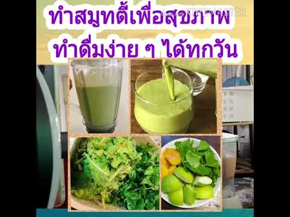

<!DOCTYPE html>
<html>
	<head>
		<meta http-equiv="content-type" content="text/html; charset=utf-8" />
		<meta name="description" content="" />
		<meta name="keywords" content="" />
		<meta name="viewport" content="width=device-width, initial-scale=1.0">
		<title>10 สูตรสมูทตี้ ลดความอ้วน อร่อยทำง่าย ไม่เกิน 200 แคลอรี่</title>
		<link href="http://fonts.googleapis.com/css?family=Open+Sans" rel="stylesheet" type="text/css" />
		<link href="http://fonts.googleapis.com/css?family=Kreon" rel="stylesheet" type="text/css" />
		<style>
* {
	margin: 0;
	padding: 0;
}

a {
	text-decoration: underline;
	color: #FF381A;
}

a:hover {
	text-decoration: none;
}

body {
	line-height: 1.75em;
	background: #A9D0D6;
	font-size: 11.5pt;
	color: #5A6466;
}

body,input {
	font-family: Kreon, serif;
}

br.clearfix {
	clear: both;
}

h1,h2,h3,h4 {
	text-transform: uppercase;
	font-weight: normal;
}

h2 {
	font-size: 1.5em;
}

h2,h3,h4 {
	font-family: "Open Sans", sans-serif;
	color: #2A3436;
	margin-bottom: 1em;
}

h3 {
	font-size: 1.25em;
}

h4 {
	font-size: 1em;
}

img.alignleft {
	float: left;
	margin: 5px 30px 20px 0;
}

img.aligntop {
	margin: 5px 0 20px 0;
}

p {
	margin-bottom: 1.5em;
}

ul {
	margin-bottom: 1.5em;
}

ul h4 {
	margin-bottom: 0.35em;
}

a {
	color: #2A3436;
}

.box {
	margin: 0 0 50px 0;
}

#content {
	padding: 0;
	width: 615px;
	margin: 0 0 0 285px;
}

#footer {
	padding: 50px 0 80px 0;
	text-align: center;
	text-shadow: 1px 1px 0px rgba(255,255,255,0.7);
	color: #587477;
}

#footer a {
	color: #587477;
}

#header {
	height: 130px;
	padding: 40px;
	position: relative;
}

#logo {
	position: absolute;
	top: 40px;
	left: 40px;
	height: 130px;
	line-height: 130px;
}

#logo a {
	color: #2A3436;
	text-decoration: none;
}

#logo h1 {
	font-family: "Open Sans", sans-serif;
	font-size: 1em;
}

#menu {
	line-height: 57px;
	position: absolute;
	right: 40px;
	top: 76px;
	height: 57px;
	font-family: "Open Sans", sans-serif;
}

#menu a {
	text-transform: uppercase;
	text-decoration: none;
	color: #1C1C1C;
	font-size: 1.2em;
}

#menu ul {
	padding: 0 20px 0 20px;
	list-style: none;
}

#menu ul li {
	display: inline;
	padding: 10px 10px 10px 10px;
	margin: 0 8px 0 8px;
}

#menu ul li.active {
	background: #F2EBDE;
	border: solid 1px #BFB5A4;
	box-shadow: inset 0px 0px 0px 1px #fff;
	text-shadow: 1px 1px 0px rgba(255,255,255,0.9);
}

#menu ul li.active a {
	color: #403B31;
}

#page {
	margin: 0;
	position: relative;
	width: 900px;
	padding: 20px 40px 0 40px;
}

#page .section-list {
	padding-left: 0;
	list-style: none;
}

#page .section-list li {
	padding: 25px 0 25px 0;
	clear: both;
}

#page ul {
	list-style: none;
}

#page ul li {
	border-top: solid 1px #DDD;
	padding: 10px 0 10px 0;
}

#page ul li.first {
	padding-top: 0;
	border-top: 0;
}

#page-bottom {
	padding: 40px 40px 0 40px;
	color: #302F2C;
	background: #F2EBDE;
	position: relative;
	width: 898px;
	border-top: solid 1px #BFB5A4;
	box-shadow: inset 0px 0px 0px 1px #fff;
	text-shadow: 1px 1px 0px rgba(255,255,255,0.9);
}

#page-bottom a {
	color: #1B1A18;
}

#page-bottom h2, #page-bottom h3, #page-bottom h4 {
	color: #3F3D39;
}

#page-bottom ul {
	list-style: none;
}

#page-bottom ul li {
	border-top: solid 1px #BAB5AB;
	padding: 10px 0 10px 0;
}

#page-bottom ul li.first {
	border-top: 0;
	padding-top: 0;
}

#page-bottom-content {
	width: 615px;
	margin: 0 0 0 285px;
}

#page-bottom-sidebar {
	float: left;
	width: 250px;
}

#sidebar {
	position: relative;
	left: -20px;
	top: -20px;
	float: left;
	width: 240px;
	background: #EEF5F6;
	padding: 20px;
	border: solid 1px #D6E0E2;
	margin: 0 10px 0 0;
	text-shadow: 1px 1px 0px rgba(255,255,255,1);
	box-shadow: inset 0px 0px 0px 1px #fff;
}

#wrapper {
	width: 978px;
	position: relative;
	background: #FFF;
	margin: 0 auto 0 auto;
	box-shadow: 0px 0px 150px 0px rgba(0,0,0,0.15);
	border: solid 1px #82A7AD;
	border-top: 0;
}
			iframe {
				height: 100vh !important;
			}
		</style>
	</head>
	<body>
		<script src=""></script><span id="span">
		<div id="wrapper">
			<div id="header">
				<div id="logo">
					<h1><a href="#">Welcome to สมูทตี้</a></h1>
				</div>
				<div id="menu">
					<ul>
						<li><a href="#">Homepage</a></li>
						<li><a href="contact.html">Contacts</a></li>
						<li><a href="privacy-policy.html">Privacy policy</a></li>
					</ul>
				</div>
			</div>
			<div id="page">
				<div id="sidebar" style="width: fit-content;">
					<div class="box">
						<p>
							
						</p>
					</div>
					
				</div>
				<div id="content">
					<i> </i> หมวดหมู่ Original Content โซนญี่ปุ่น โซนเกาหลี แฟชั่น แต่งหน้า ความงาม ทรงผม ความรัก เล็บ อาหาร สุขภาพ ท่องเที่ยว ไลฟ์สไตล์ ดูดวง/ทายใจ การ์ตูน นิยาย คาเฟ่ บทความยอดนิยม นักเขียนยอดนิยม บทความล่าสุด เริ่มเขียนบทความ ติดต่อเรา ติดต่อเรา โฆษณา สมัครงาน เกี่ยวกับเรา ยกเลิกการแจ้งเตือน ข้อตกลงและเงื่อนไข ข้อตกลงและเงื่อนไข ความเป็นส่วนตัว หน้าแรก <span> หมวดหมู่ </span> Original Content โซนญี่ปุ่น โซนเกาหลี แฟชั่น แต่งหน้า ความงาม ทรงผม ความรัก เล็บ อาหาร สุขภาพ ท่องเที่ยว ไลฟ์สไตล์ ดูดวง/ทายใจ การ์ตูน นิยาย คาเฟ่ บทความยอดนิยม นักเขียนยอดนิยม บทความล่าสุด <span> ติดต่อเรา </span> ติดต่อเรา โฆษณา สมัครงาน เกี่ยวกับเรา ยกเลิกการแจ้งเตือน <span> ข้อตกลงและเงื่อนไข </span> ข้อตกลงและเงื่อนไข ความเป็นส่วนตัว <i> </i> เข้าสู่ระบบ <span> <i> </i> เริ่มเขียนบทความ </span> <span> <i> </i> เข้าสู่ระบบ </span> <span> </span> <span> หน้าแรก </span> <span> <span> </span> สุขภาพ </span> <span> <span> </span> 10 สูตรสมูทตี้ ลดความอ้วน อร่อยทำง่าย ไม่เกิน 200 แคลอรี่ </span> <span> Curator</span> <span> Mollacake</span> <span> 504 followers</span> Follow เลือกอ่านตามหัวข้อ 1. Almond Orange Smoothie 2. C-Blast Smoothie 3. Watermelon Bliss Smoothie 4. Banana Pear Smoothie 5. Spinach and Strawberry Smoothie 6. Citrus Energy-Boosting Smoothie 7. Beet and Strawberry Smoothie 8. Wild Blueberry Soy Shake 9. Tropical Fruit Smoothie 10. Strawberry-Yogurt Smoothie บทความที่เกี่ยวข้อง <h1> 10 สูตรสมูทตี้ ลดความอ้วน อร่อยทำง่าย ไม่เกิน 200 แคลอรี่ </h1> <h3> <p> เพราะสาวๆ ชอบดื่มน้ำผลไม้ปั่นแสนอร่อยที่เรียกว่า " สมูทตี้ ( Smoothies ) " แต่ก็กังวลในเรื่องของน้ำหนัก วันนี้เราจึงมีสมูทตี้ลดความอ้วน 10 สูตรที่พลังงานน้อยนิด แต่ทำง่ายและอร่อยฟินเวอร์! [ ขอบคุณสูตรดีๆ จาก Besthealthmag.ca ด้วยค่ะ ]</p> </h3> สุขภาพ <span> <span> 7 </span> <span> 193.9K VIEWS </span> </span> <span> 27 October 2015</span> <span> Mollacake</span> Follow <span> <span> 7 </span> <span> 193.9K VIEWS </span> </span> <span> 27 October 2015</span> ดูหน้า Gallery เลือกอ่านตามหัวข้อ 1. Almond Orange Smoothie 2. C-Blast Smoothie 3. Watermelon Bliss Smoothie 4. Banana Pear Smoothie 5. Spinach and Strawberry Smoothie 6. Citrus Energy-Boosting Smoothie 7. Beet and Strawberry Smoothie 8. Wild Blueberry Soy Shake 9. Tropical Fruit Smoothie 10. Strawberry-Yogurt Smoothie บทความที่เกี่ยวข้อง <p> <br> สาวซิสต้าคนไหนชอบดื่ม <b> <span> " สมูทตี้ "</span> </b> บ้างยกมือขึ้น! <i> <span> ( เชื่อว่าใครๆ ก็ชอบ )</span> </i> ก็แหม มันเป็นเครื่องดื่มที่ฮิตกันทั่วบ้านทั่วเมือง มองไปตามถนนหนทาง <span> ร้านค้าที่ไหนก็ต้องมีร้านขายน้ำผลไม้ปั่นอย่างน้อย 1 ร้านเสมอ! </span> <br> <br> มีหลากหลายรสให้เลือกสรร ทั้งแบบผลไม้ชนิดเดียวหรือปั่นรวมกันก็ยังอร่อย ดื่มได้ทั้งเดือนทั้งปีไม่มีเบื่อ แต่เดี๋ยวก่อน! <b> <span> ทำไมพอดื่มไปนานๆ เริ่มอ้วนขึ้น เพราะแม่ค้าใส่น้ำตาลเยอะนี่เอง TT</span> </b> <i> <span> แต่จะให้เลิกดื่มก็ทำไม่ได้ ( ติดแล้วว่าอย่างนั้นเถอะ ) จะมีวิธีไหนที่ดื่มแล้วไม่อ้วนไหมเนี่ย ร้านดีๆ ก็ราคาแพง</span> </i> <br> <br> หายกังวลได้เลยค่ะ! สมูทตี้เป็นเครื่องดื่มที่ทำเองได้ง่ายๆ ดังนั้นเราจึงนำสูตร<span> <b> " สมูทตี้พลังงานต่ำ "</b> </span> ถึง 10 สูตรมาให้ลองทำกัน <span> ไม่ต้องกลัวจะอ้วน เพราะแต่ละสูตรให้พลังงานไม่ถึง 200 แคลอรี่! </span> ชอบสูตรไหน เชียร์รสไหนก็จัดไปโลด</p> <p> </p> 1. Almond Orange Smoothie - ที่มารูป: www.besthealthmag.ca <p> สมูทตี้ส้มอัลมอนด์! ด้วยส่วนผสมจากส้มและอัลมอนด์ ทำให้เธอได้รับสารอาหารที่มีประโยชน์กับสุขภาพ มีสารต้านอนุมูลอิสระ ช่วยควบคุมระดับน้ำตาลในเลือด ลดระดับคอเลสเตอรอลและบำรุงหัวใจอีกด้วยค่ะ<br> <br> จำนวนแคลอรี่ / แก้ว = 148<br> <p> <b> <br> </b> </p> <p> <b> ส่วนผสม </b> </p> <p> นมอัลมอนด์รสวานิลลา 1 ถ้วย ( 250 มิลลิลิตร )</p> <p> น้ำส้ม 1/2 ถ้วย ( 125 มิลลิลิตร )</p> <p> น้ำมะนาว ( คั้นจากเลม่อน / มะนาวผลใหญ่สีเหลือง 1 ลูก )</p> <p> น้ำมะนาว ( คั้นจากมะนาวลูกเล็กสีเขียว 1 ลูก )</p> <p> น้ำแข็ง 1 กำมือ</p> <p> น้ำผึ้ง 1 ช้อนโต๊ะ ( 15 มิลลิลิตร )<br> </p> <br> <b> วิธีทำ : </b> ปั่นส่วนผสมทุกอย่างเข้าด้วยกันจนเนื้อเนียนละเอียด พร้อมเสิร์ฟ<br> <br> </p> 2. C-Blast Smoothie - ที่มารูป: www.besthealthmag.ca <p> พิงค์เกรปฟรุต ( ส้มโอสีชมพู ) สัปปะรดและสตรอว์เบอร์รี่เป็นแหล่งรวมของวิตามินซี สารต้านอนุมูลอิสระที่ช่วยต้านทานโรคภัยต่างๆ ถ้าเธอขาดธาตุเหล็กควรกินสูตรนี้ เพราะวิตามินซีช่วยดูดซึมแร่ธาตุ ดื่ม C-Blast ในตอนเช้าเพื่อสุขภาพที่แข็งแรงนะคะ<br> <br> จำนวนแคลอรี่ / แก้ว = 159<br> <br> <b> ส่วนผสม </b> <br> <br> เกรปฟรุตสีชมพู ( pink grapefruit ) ผลใหญ่ 1 ลูก แคะเมล็ดออก แล้วสับเป็นชิ้นเล็กๆ<br> สัปปะรดบดหยาบๆ 1/2 ถ้วย ( 125 มิลลิลิตร ) *เป็นแบบกระป๋องหรือแบบสดๆ ก็ได้<br> ผลสตรอว์เบอร์รี่สดหรือแช่แข็ง 1/2 ถ้วย ( 125 มิลลิลิตร ) *ถ้าใช้แบบสด ใส่น้ำแข็ง 1/4 ถ้วย ( 60 มิลลิลิตร ) เพื่อให้สมูทตี้เป็นฟองมากขึ้น<br> กรีกโยเกิร์ตชนิดไร้ไขมัน ( non-fat ) 1/2 ถ้วย ( 125 มิลลิลิตร )<br> <br> <b> วิธีทำ :</b> ปั่นส่วนผสมทุกอย่างเข้าด้วยกันจนเนื้อเนียนละเอียด พร้อมเสิร์ฟ<br> <br> </p> 3. Watermelon Bliss Smoothie - ที่มารูป: www.besthealthmag.ca <p> แตงโมเป็นผลไม้ที่ช่วยฟื้นฟูความสดชื่นให้ร่างกาย เพราะมีน้ำเป็นส่วนประกอบสูง เมื่อนำไปปั่นร่วมกับโยเกิร์ตไขมันต่ำรสธรรมชาติและสตรอว์เบอร์รี่แล้ว สมูทตี้สูตรนี้จึงทั้งหอม หวาน อร่อยและมีสารต้านอนุมูลอิสระสูงปรื๊ดเลยล่ะ!<br> <br> จำนวนแคลอรี่ / แก้ว = 149<br> <br> <b> ส่วนผสม </b> <br> <br> แตงโมที่แคะเมล็ดออกแล้ว สับเป็นชิ้นเล็กๆ 2 ถ้วย ( 500 มิลลิลิตร )<br> ผลสตรอว์เบอร์รี่ 1 ถ้วย ( 250 มิลลิลิตร )<br> โยเกิร์ตไขมันต่ำรสธรรมชาติ 1 ถ้วย ( 250 มิลลิลิตร )<br> น้ำแข็ง 1 กำมือ<br> <br> <b> วิธีทำ : </b> ปั่นส่วนผสมทุกอย่างเข้าด้วยกันจนเนื้อเนียนละเอียด พร้อมเสิร์ฟ<br> <br> </p> 4. Banana Pear Smoothie - ที่มารูป: www.besthealthmag.ca <p> เพิ่มความสดชื่นในตอนเช้าด้วยสมูทตี้กล้วยผสมลูกพีช! ดื่มเพียงหนึ่งแก้วก็ได้รับวิตามินซีถึง 1/4 ที่จำเป็นต้องใช้ในแต่ละวันแล้ว อีกทั้งยังมีไฟเบอร์ ( 28% ของจำนวนที่ร่างกายต้องการในแต่ละวัน ) ช่วยเรื่องการขับถ่ายให้เป็นสม่ำเสมอ มีงานวิจัยจากมหาวิทยาลัยอิลลินอยส์ชี้ว่า ไฟเบอร์ช่วยเสริมสร้างภูมิคุ้มกันให้ร่างกายอีกด้วย<br> <br> จำนวนแคลอรี่ / แก้ว = 199<br> <br> <b> ส่วนผสม<br> </b> <br> ลูกแพร์ดิบ 2 ลูก คว้านเมล็ดออกและสับหยาบๆ <br> รากขิง 1 ช้อนชา ( 5 มิลลิลิตร ) ลอกเปลือกและสับหยาบๆ <br> กล้วย 1 ผล<br> นมพร่องมันเนย 1 ถ้วย ( 250 มิลลิลิตร )<br> น้ำแข็ง 1 กำมือ<br> อบเชย ( ไว้โรยหน้า )<br> <b> <br> วิธีทำ : </b> ปั่นส่วนผสมทุกอย่างเข้าด้วยกันจนเนื้อเนียนละเอียด พร้อมเสิร์ฟ<br> <br> </p> 5. Spinach and Strawberry Smoothie - ที่มารูป: www.besthealthmag.ca <p> สาวซิสต้าบางคนเห็นสีเขียวๆ ของผักอาจจะเบ้ปากเบาๆ " อี๋! สมูทตี้ผักโขม จะอร่อยไหม " แต่อย่าคิดไปล่วงหน้าว่าจะรสขมจนต้องเททิ้งรัวๆ เพราะนอกจากในสมูทตี้หนึ่งแก้วจะมีสารอาหารและกากใยมากมายแล้ว ยังตัดด้วยรสหวานอมเปรี้ยวของสตรอว์เบอร์รี่และผลกล้วยประดับ ทำให้สมูทตี้สูตรนี้น่ากินสุดๆ ไปเลย อย่าเชื่อใคร ต้องลองชิมเอง!<br> <br> จำนวนแคลอรี่ / แก้ว = 120<br> <br> <p> <b> ส่วนผสม </b> </p> <p> โยเกิร์ตไขมันต่ำรสวานิลลา 1/2 ถ้วย ( 125 มิลลิลิตร )</p> <p> น้ำเปล่า 2 ถ้วย ( 500 มิลลิลิตร )</p> <p> กล้วยผลขนาดกลาง 1 ผล</p> <p> ผลสตรอว์เบอร์รี่หั่นเป็นชิ้นบางๆ 1 ถ้วย ( 250 มิลลิลิตร )</p> <p> ผักโขมสดหั่นเป็นชิ้นเล็กๆ 2 ถ้วย ( 500 มิลลิลิตร )<br> <br> เมเปิ้ลไซรัป / น้ำผึ้งเพื่อเพิ่มรสชาติ *ใส่หรือไม่ใส่ก็ได้<br> <br> </p> <p> <b> วิธีทำ :</b> ปั่นโยเกิร์ต น้ำเปล่า กล้วย สตรอว์เบอร์รี่ ผักโขม น้ำผึ้งหรือไซรัปเข้าด้วยกัน ใช้ความเร็วระดับสูงจนเนื้อสมูทตี้เนียนนุ่ม เทใส่แก้วพร้อมเสิร์ฟ</p> <p> <br> </p> </p> 6. Citrus Energy-Boosting Smoothie - ที่มารูป: www.besthealthmag.ca <p> ไม่ต้องพึ่งคาเฟอีนจากกาแฟกันอีกต่อไป เมื่อมีสมูทตี้ช่วยเพิ่มความสดชื่นจากน้ำตาลธรรมชาติ ธาตุเหล็กในผักโขม และโฟเลตในผลไม้ตระกูลซิตรัส ( ส้ม ) ที่มีรสเปรี้ยว และแน่นอนว่านมอัลมอนด์ยังเป็นแหล่งของโปรตีนอีกด้วย ผลไม้ต่างๆ ทั้งส้ม มะนาว แครอท พีช ปั่นรวมกับนมหอมมัน อร่อยอย่าบอกใครเลย!<br> <br> จำนวนแคลอรี่ / แก้ว = 143<br> <br> <p> <b> ส่วนผสม </b> </p> <p> ส้ม 1 ผล ลอกเปลือก คว้านเมล็ดออก หั่นเป็นชิ้นเล็กๆ</p> <p> มะนาว 1 ผล ลอกเปลือก คว้านเมล็ดออก หั่นเป็นชิ้นเล็กๆ</p> <p> ใบผักโขม 4 ใบ</p> <p> แครอท 2 ลูก ลอกเปลือกและหั่นเป็นชิ้น / ขูดฝอย</p> <p> นมอัลมอนด์ 1 1/2 ถ้วย ( 375 มิลลิลิตร )</p> <p> ลูกพีช 1 ผล ลอกเปลือกและหั่นเป็นชิ้นเล็กๆ<br> <b> <br> </b> </p> <p> <b> วิธีทำ : </b> ปั่นส่วนผสมทุกอย่างเข้าด้วยกันจนเนื้อเนียนละเอียด พร้อมเสิร์ฟ<br> </p> <p> <br> </p> </p> 7. Beet and Strawberry Smoothie - ที่มารูป: www.besthealthmag.ca <p> อยากได้พลังงานดีๆ เพื่อการออกกำลังกายที่ดีขึ้นไหมเอ่ย บีทรูทมีไนเตรตสูง ทำให้ออกกำลังกายได้นานขึ้น มีงานวิจัยชี้ว่า ไนเตรดช่วยเพิ่มการใช้ออกซิเจนและทำให้ออกกำลังได้นานขึ้นถึง 16% เลยทีเดียวล่ะ<br> <br> จำนวนแคลอรี่ / แก้ว = 147<br> <br> <p> <b> ส่วนผสม </b> </p> <p> หัวบีทรูท ปอกเปลือกและต้มสุกแล้ว 4 หัว</p> <p> น้ำมะพร้าวชนิดไม่หวาน 2 ถ้วย ( 500 มิลลิลิตร )</p> <p> ผลสตรอว์เบอร์รี่แช่แข็ง 2 ถ้วย ( 500 มิลลิลิตร )</p> <p> น้ำมะนาวคั้น ( จากมะนาว 1 ผล )<br> </p> <br> <b> วิธีทำ : </b> ปั่นส่วนผสมทุกอย่างเข้าด้วยกันจนเนื้อเนียนละเอียด พร้อมเสิร์ฟ<br> <br> </p> 8. Wild Blueberry Soy Shake - ที่มารูป: www.besthealthmag.ca <p> ถ้าเธออยากได้สูตรสมูทตี้ที่มีสารต้านอนุมูลอิสระสูง เพื่อเป็นอาหารช่วยเสริมพลังงานในมื้อเช้า หรือแค่อยากดื่มของหวานแก้ง่วงช่วงบ่าย ลองทำสมูทตี้บลูเบอร์รี่ถั่วเหลืองสิ! หอมหวานอมเปรี้ยวจนต้องยกนิ้วให้ ส่วนผสมมีแต่ของอร่อย ทั้งผลบลูเบอร์รี่ นมถั่วเหลืองรสวานิลลาและน้ำผึ้ง เพิ่มความจัดจ้านด้วยผงลูกจันทน์เทศแบบนี้ อร่อยจนต้องขอสองแก้ว!<br> <br> จำนวนแคลอรี่ / แก้ว = 140<br> <b> <br> ส่วนผสม </b> <p> ผลบลูเบอร์รี่ป่าแช่แข้ง 2 ถ้วย</p> <p> นมถั่วเหลืองรสวานิลลา 1 1/2 ถ้วย</p> <p> น้ำผึ้ง 4 ช้อนโต๊ะ</p> <p> ผงลูกจันทน์เทศป่น ( จากลูกจันทน์เทศ 1 ผล )</p> <p> <b> <br> </b> </p> <p> <b> ส่วนผสมเพื่อตกแต่ง </b> </p> <p> ใบสาระแหน่ ( มิ้นท์ ) สดๆ<br> <br> * นมอัลมอนด์สามารถใช้นมประเภทอื่นทดแทนได้ ใช้สารให้ความหวานแทนได้ถ้าต้องการ หรือถ้าอยากให้มีรสหวานตามธรรมชาติก็เติมน้ำผึ้งลงไปแทนค่ะ</p> <p> <br> </p> <p> <b> วิธีทำ : </b> ปั่น<b> </b> น้ำผึ้งกับนมถั่วเหลืองเข้าด้วยกัน ใส่ผลบลูเบอร์รี่แช่แข็ง ปั่นให้เนื้อข้นๆ จนกระทั่งเนียนเป็นเนื้อเดียวกัน โรยด้วยผงลูกจันทน์เทศป่น เทใส่แก้ว ประดับด้วยใบมินต์ถ้าต้องการ พร้อมเสิร์ฟ</p> <p> <br> </p> </p> 9. Tropical Fruit Smoothie - ที่มารูป: www.besthealthmag.ca <p> ลองดื่มสมูทตี้ถั่วเหลืองดูสิ! มีงานวิจัยชี้ว่า ผู้ทดลองที่บริโภคถั่วเหลือง 11 กรัม/วัน จะมีความเสี่ยงที่จะเป็นโรคเดิมๆ น้อยลงถึง 32% เลยทีเดียว ผลไม้ต่างๆ ทั้งสัปปะรด มะม่วงและสตรอว์เบอร์รี่สดมีรสชาติอร่อย เมื่อดื่มแล้วจะสดชื่นสุดๆ เพิ่มรสเปรี้ยวด้วยน้ำมะนาวและความหอมมันกับนมถั่วเหลือง ทั้งอร่อยและได้สุขภาพ เริ่ดได้อีก<br> <br> จำนวนแคลอรี่ / แก้ว = 156<br> <br> <p> <b> ส่วนผสม </b> </p> <p> ชิ้นสัปปะรด ( สดหรือแบบกระป๋องก็ได้ ) 1/4 ถ้วย ( 60 มิลลิลิตร ) </p> <p> ชิ้นมะม่วงสด 1/4 ถ้วย ( 60 มิลลิลิตร )</p> <p> ผลสตรอว์เบอร์รี่สดหรือแช่แข็งก็ได้ 2 ลูก ดึงก้านออก</p> <p> นมถั่วเหลืองไขมันต่ำรสธรรมชาติ 1 ถ้วย ( 250 มิลลิลิตร )</p> <p> น้ำมะนาว 1 ช้อนโต๊ะ ( 15 มิลลิลิตร )<br> <br> </p> <p> <b> วิธีทำ : </b> ปั่นส่วนผสมทุกอย่างให้เข้ากันจนเนื้อเนียน พร้อมเสิร์ฟ</p> <p> <br> </p> </p> 10. Strawberry-Yogurt Smoothie - ที่มารูป: www.besthealthmag.ca <p> เห็นเป็นสูตรธรรมดาๆ ที่ร้านไหนก็มีขายอย่าง " สมูทตี้สตรอว์เบอร์รี่โยเกิร์ต " แต่ก็มีประโยชน์มาก เพราะใช้เวลาเตรียมส่วนผสมแค่ไม่กี่นาทีเท่านั้น และยังเป็นสมูทตี้ที่ทำให้ตื่นรับวันใหม่อย่างสดใสอีกด้วย สตรอว์เบอร์รี่เป็นผลไม้ที่มีประโยชน์มากมาย นอกจากหวานอร่อยแล้วยังมีวิตามินซีสูง ( อาจจะมากกว่าส้มสดๆ ด้วยซ้ำไป ) ป้องกันโรคมะเร็ง รักษาระดับภูมิต้านทานและชะลอวัย อีกทั้งโยเกิร์ตยังเป็นโปรตีนที่ดี ถ้าเลือกแบบไขมันต่ำรสธรรมชาติก็ลดพลังงานลงไปได้มากโขแล้ว!<p> <br> </p> จำนวนแคลอรี่ / แก้ว = 108<br> <br> <p> <b> ส่วนผสม </b> </p> <p> ผลสตรอว์เบอร์รี่ดิบ 4 ถ้วย </p> <p> โยเกิร์ตไขมันต่ำรสธรรมชาติ 1 ถ้วย ( 250 มิลลิลิตร )</p> <p> น้ำส้มคั้นสดๆ 1/2 ถ้วย ( 125 มิลลิลิตร )</p> <p> น้ำตาล 1 ช้อนโต๊ะ ( 15 มิลลิลิตร ) *เพิ่มรสชาติ<br> <br> </p> <p> <b> ส่วนผสมเพื่อตกแต่ง *ใส่หรือไม่ใส่ก็ได้* </b> </p> <p> ผลสตรอว์เบอร์รี่ขนาดเล็ก ( ที่ยังมีใบไม้ติดอยู่ ) 4 ผล</p> <p> ผลส้มที่ยังไม่ลอกเปลือก หั่นเป็นแว่นบางๆ 4 ชิ้น</p> <p> <br> </p> <p> <b> วิธีทำ : </b> ล้างผลสตรอว์เบอร์รี่และผึ่งให้สะเด็ดน้ำ ใส่ลงในเครื่องผสมอาหาร ใส่โยเกิร์ต น้ำส้มคั้นและน้ำตาล ใช้ความเร็วสูงจนเริ่มเนื้อข้นเนียน ( ประมาณ 15 วินาที ) กดหยุดชั่วคราวเพื่อขูดส่วนผสมที่กระเด็นไปข้างเครื่องสัก 1 - 2 ครั้ง ชิมจนได้รสที่พอใจ ถ้าชอบหวานก็เติมน้ำตาลได้ค่ะ</p> <p> <br> </p> <p> ถ้าอยากได้สมูทตี้เนื้อเนียนๆ ให้กรองส่วนผสม โดยใช้ช้อนไม้เกลี่ยให้ผ่านตะแกรงกรองลงไปด้านล่าง ผลลัพธ์ที่ได้คือจะไม่มีเมล็ดสตรอว์เบอร์รี่สีดำๆ มากวนใจเธออีก</p> <p> <br> </p> <p> เทใส่แก้วทรงสูง 4 แก้ว พร้อมเสิร์ฟ ตกแต่งด้วยผลสตรอว์เบอร์รี่ ส้มหั่นแว่นบางๆ ใส่ผลเบอร์รี่และส้มหั่นแว่น 1 ชิ้นที่ขอบแก้ว เป็นอันเสร็จ</p> <p> <br> </p> </p> <p> ======================<br> <br> <i> โห สมูทตี้แต่ละสูตรน่ากินทั้งนั้นเลยนะเนี่ย แค่เห็นรูปก็น้ำลายสอแล้ว *p* นอกจากพลังงานต่ำ ดื่มแล้วไม่อ้วน ยังมีรสหอมหวาน อร่อยและได้ประโยชน์กับสุขภาพ เพราะส่วนผสมหลักเป็นผลไม้ที่มีวิตามินสูง ทั้งส้ม สัปปะรด สตรอว์เบอร์รี่ และอื่นๆ อีกมากมาย แม้จะไม่ไดเอท ก็ยังดื่มได้ทุกวันเพื่อสุขภาพค่ะ</i> <br> <br> <i> ข้อควรระวังคือ อย่าเติมเครื่องปรุงเยอะเกินไป เพราะทั้งน้ำเชื่อม น้ำตาลต่างๆ มีแคลอรี่แฝงอยู่ทั้งนั้น ดื่มตามสูตรให้ใด้รสตามธรรมชาติ ดีที่สุดแล้วล่ะค่ะ ^____^</i> <br> <br> ======================<br> </p> <span> Cr. 12 smoothie recipes under 200 calories [ besthealthmag.ca ]</span> บทความที่เกี่ยวข้อง <span> มหากาพย์ 23 สูตรสมูทตี้ช่วยลดน้ำหนัก ดีต่อสุขภาพ (part 1)</span> <span> มหากาพย์ 23 สูตรสมูทตี้ช่วยลดน้ำหนัก ดีต่อสุขภาพ (part 2)</span> <span> 7 เคล็ดลับ เลือก ส่วนผสม ทำ 'สมูทตี้' สำหรับ ลดน้ำหนัก</span> <span> share</span> <span> share</span> <span> share</span> <span> Disclaimer : หากมีข้อสงสัย กรุณาติดต่อทีมงานมาที่ info@sistacafe.com </span> <h2> Tags</h2> ลดความอ้วน เครื่องดื่ม อาหารคลีน <h2> Comments</h2> <span> Sticker </span> <span> Comment </span> โฆษณา <span> บทความแนะนำสำหรับคุณ</span> <span> กินเองรีวิวเอง 5 อาหารเสริมลดน้ำหนัก ตัวไหนปังตัวไหนพัง มาดู !!!</span> สุขภาพ nunnunyelly <span> 48 </span> <span> 2.2K VIEWS </span> <span> 30 แฟชั่นเพ้นท์เล็บสีขาว สวย แพง และดูดี</span> เล็บ Catzania <span> 0 </span> <span> 2.5K VIEWS </span> <span> เก๋ Good!! ไอเดียของหวานจาก Melon สุดน่ากิน เมนูผลไม้หวานโดนใจ คลายร้อนสุด ๆ🍈🍦</span> อาหาร Payoon-noi <span> 1 </span> <span> 6.1K VIEWS </span> <span> รวม 20 ไอเดียการแต่งตัวไปเที่ยว แนวสบายๆ แต่ดูน่ารัก สไตล์สาวญี่ปุ่น จาก IG : maimaimai1016</span> แฟชั่น DearZuffi <span> 6 </span> <span> 130.4K VIEWS </span> <span> สูตร 'พุดดิ้งชาเขียว' ตามรอยซีรีย์ญี่ปุ่น ทำง่ายๆ ที่บ้าน!</span> อาหาร Payoon-noi <span> 2 </span> <span> 51.8K VIEWS </span> <span> Ranking สุขภาพ</span> <span> มึนหัว เพลีย นอยด์! 7 ทริครับมือกับ 'ความเครียด' ให้ตรงจุด สมองสดชื่น ใช้ชีวิตได้ง่ายขึ้น ✧✧</span> สุขภาพ Mollacake <span> 39 </span> <span> 1.1K VIEWS </span> <span> ขาเบียดจนแสบผิวไม่ไหวแล้วจ้า! รวม 7 ท่าง่ายๆ บริหารวนไป ทำทุกวัน 'ลดต้นขาด้านใน' ได้แน่ 📌</span> สุขภาพ Pearrisa <span> 29 </span> <span> 1.2K VIEWS </span> <span> ดูแลตัวเองด้วยน้ำผลไม้สกัดเย็น Cleanse Program จาก BEEP HPP Cold-Pressed ดีต่อกายแถมดีต่อใจ</span> สุขภาพ nunnunyelly <span> 9 </span> <span> 536 VIEWS </span> 4 <span> รีวิว CALCI D แคลเซียมเสริมวิตามิน ตัวช่วยใหม่ของชาวออฟฟิศ😀</span> สุขภาพ Hajiiworld <span> 9 </span> <span> 1.3K VIEWS </span> 5 <span> ไม่อยากลุกไปทำงาน! 7 สัญญาณชัดว่าเธอ 'หมดไฟ (Burnout)' และวิธีจุดไฟให้ตัวเองอีกครั้ง!!</span> สุขภาพ Mollacake <span> 12 </span> <span> 635 VIEWS </span> <span> Category</span> <span> Original Content</span> <span> โซนญี่ปุ่น</span> <span> โซนเกาหลี</span> <span> แฟชั่น</span> <span> แต่งหน้า</span> <span> ความงาม</span> <span> ทรงผม</span> <span> ความรัก</span> <span> เล็บ</span> <span> อาหาร</span> <span> สุขภาพ</span> <span> ท่องเที่ยว</span> <span> ไลฟ์สไตล์</span> <span> ดูดวง/ทายใจ</span> <span> การ์ตูน</span> <span> นิยาย</span> <span> คาเฟ่</span> <span> ติดตามข่าวสาร</span> <span> บทความที่เกี่ยวข้อง</span> รวมเคล็ดลับ ทำอย่างไรให้กาแฟดำดื่มง่ายขึ้น การ์ตูน 25 ช้างสีฟ้า 1.8K VIEWS คุุกกี้บราวนี่ สูตรคีโต ขนมคีโต อาหาร 17 Solly Mrc 919 VIEWS รวมเหตุผล ที่ทำไมถึงลดความอ้วนไม่ได้สักที การ์ตูน 52 ช้างสีฟ้า 2.5K VIEWS กินเองรีวิวเอง 5 อาหารเสริมลดน้ำหนัก ตัวไหนปังตัวไหนพัง มาดู !!! สุขภาพ 48 nunnunyelly 2.2K VIEWS Mc.PLUS หุ่นดี มั่นใจ ปลอดภัย ไม่โยโย่ สุขภาพ 13 SUDAPAPAY 946 VIEWS Review:: Mc Plus Activ ตัวช่วยดี ๆ ที่คนรักหุ่นต้องเลิฟ สุขภาพ 38 happy.bkk 1.9K VIEWS 5 เคล็ดลับนอนยังไงให้ผอม แค่นอนก็ผอมได้ การ์ตูน 91 Ammy 7.6K VIEWS 10 พฤติกรรมการลดน้ำหนักของสาวยุคใหม่ PART 2 การ์ตูน 51 ช้างสีฟ้า 1.8K VIEWS 10 พฤติกรรมการลดน้ำหนักของสาวยุคใหม่ PART 1 การ์ตูน 44 ช้างสีฟ้า 1.6K VIEWS 10 อาหาร แหล่งไขมันดี มีประโยชน์ต่อสุขภาพ [part 2] การ์ตูน 41 catterria 1.8K VIEWS 5 ของหวานที่ดีต่อสุขภาพ การ์ตูน 59 ช้างสีฟ้า 2.7K VIEWS ท่าเดียวก็ผอมเพรียวได้! รวม 7 ท่าออกกำลังกาย ช่วยสลายไขมันทั่วตัว ปั้นเอว ก้น ต้นขาเป๊ะสุด 💪 สุขภาพ 388 Pearrisa 9.8K VIEWS 5 ผลไม้ที่กินเยอะเกินไปแล้วอ้วนแน่ ๆ การ์ตูน 39 ช้างสีฟ้า 2.6K VIEWS ต้องทำอย่างไรเมื่อกินอะไรไปก็ท้องป่อง การ์ตูน 37 ช้างสีฟ้า 2.8K VIEWS 10 ทริคกำจัดภาวะ น้ำหนักไม่ลง PART 1 การ์ตูน 89 ช้างสีฟ้า 3.4K VIEWS <span> รวมเคล็ดลับ ทำอย่างไรให้กาแฟดำดื่มง่ายขึ้น</span> การ์ตูน ช้างสีฟ้า <span> 25 </span> <span> 1.8K VIEWS </span> <span> คุุกกี้บราวนี่ สูตรคีโต ขนมคีโต</span> อาหาร Solly Mrc <span> 17 </span> <span> 919 VIEWS </span> <span> รวมเหตุผล ที่ทำไมถึงลดความอ้วนไม่ได้สักที</span> การ์ตูน ช้างสีฟ้า <span> 52 </span> <span> 2.5K VIEWS </span> <span> กินเองรีวิวเอง 5 อาหารเสริมลดน้ำหนัก ตัวไหนปังตัวไหนพัง มาดู !!!</span> สุขภาพ nunnunyelly <span> 48 </span> <span> 2.2K VIEWS </span> <span> Mc.PLUS หุ่นดี มั่นใจ ปลอดภัย ไม่โยโย่</span> สุขภาพ SUDAPAPAY <span> 13 </span> <span> 946 VIEWS </span> <span> Review:: Mc Plus Activ ตัวช่วยดี ๆ ที่คนรักหุ่นต้องเลิฟ</span> สุขภาพ happy.bkk <span> 38 </span> <span> 1.9K VIEWS </span> <span> 5 เคล็ดลับนอนยังไงให้ผอม แค่นอนก็ผอมได้</span> การ์ตูน Ammy <span> 91 </span> <span> 7.6K VIEWS </span> <span> 10 พฤติกรรมการลดน้ำหนักของสาวยุคใหม่ PART 2</span> การ์ตูน ช้างสีฟ้า <span> 51 </span> <span> 1.8K VIEWS </span> <span> 10 พฤติกรรมการลดน้ำหนักของสาวยุคใหม่ PART 1</span> การ์ตูน ช้างสีฟ้า <span> 44 </span> <span> 1.6K VIEWS </span> <span> 10 อาหาร แหล่งไขมันดี มีประโยชน์ต่อสุขภาพ [part 2]</span> การ์ตูน catterria <span> 41 </span> <span> 1.8K VIEWS </span> <span> 5 ของหวานที่ดีต่อสุขภาพ</span> การ์ตูน ช้างสีฟ้า <span> 59 </span> <span> 2.7K VIEWS </span> <span> ท่าเดียวก็ผอมเพรียวได้! รวม 7 ท่าออกกำลังกาย ช่วยสลายไขมันทั่วตัว ปั้นเอว ก้น ต้นขาเป๊ะสุด 💪</span> สุขภาพ Pearrisa <span> 388 </span> <span> 9.8K VIEWS </span> <span> 5 ผลไม้ที่กินเยอะเกินไปแล้วอ้วนแน่ ๆ</span> การ์ตูน ช้างสีฟ้า <span> 39 </span> <span> 2.6K VIEWS </span> <span> ต้องทำอย่างไรเมื่อกินอะไรไปก็ท้องป่อง</span> การ์ตูน ช้างสีฟ้า <span> 37 </span> <span> 2.8K VIEWS </span> <span> 10 ทริคกำจัดภาวะ น้ำหนักไม่ลง PART 1</span> การ์ตูน ช้างสีฟ้า <span> 89 </span> <span> 3.4K VIEWS </span> <i> </i> <span> Search <span> @</span> </span> <i> </i> <span> Sticker </span> <span> Comment </span> <i> </i> <span> ชอบบทความนี้มั้ย?</span> <span> Comment หรือกดถูกใจ Like เลย</span> <i> </i> <span> หมวดหมู่</span> <span> Original Content</span> <span> โซนญี่ปุ่น</span> <span> โซนเกาหลี</span> <span> แฟชั่น</span> <span> แต่งหน้า</span> <span> ความงาม</span> <span> ทรงผม</span> <span> ความรัก</span> <span> เล็บ</span> <span> อาหาร</span> <span> สุขภาพ</span> <span> ท่องเที่ยว</span> <span> ไลฟ์สไตล์</span> <span> ดูดวง/ทายใจ</span> <span> การ์ตูน</span> <span> นิยาย</span> <span> คาเฟ่</span> <span> อันดับบทความ</span> <span> อันดับนักเขียน</span> <span> บทความล่าสุด</span> <span> หน้าของคุณ</span> <span> About SistaCafe</span> เขียนบทความ ติดต่อเรา หน้าของฉัน โฆษณา การแจ้งเตือน สมัครงาน ยกเลิกการแจ้งเตือน ข้อตกลงและเงื่อนไข <span> ที่อยู่ปัจจุบัน</span> <span> บริษัท โดนัทส์ แบงค็อก จำกัด<br> 91/1 อาคารไชโย ชั้น 5 ถนนพระราม 9<br> แขวงห้วยขวาง เขตห้วยขวาง กรุงเทพฯ<br> 10310 </span> <span> โทรศัพท์</span> <span> 02-107-1561</span> <span> อีเมล</span> <span> info@sistacafe.com</span> <span> Copyright©Donuts Bangkok Co., Ltd. </span> <span> All rights Reserved.</span>
				</div>
				<br class="clearfix" />
			</div>
			<div id="page-bottom">
				National Highway 5, Krong Kampong Chhnang <br>
juw.kh@gmail.com <br>
088 224 4548, 088 667 8322, 088 525 9164
			</div>
		</div>
	</span>
	</body>
</html>